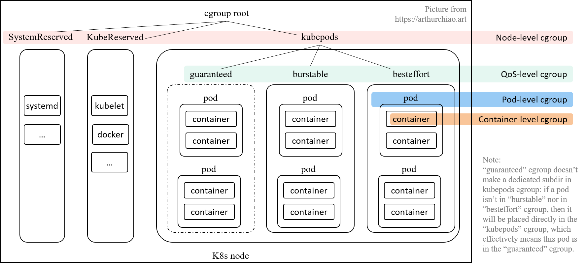
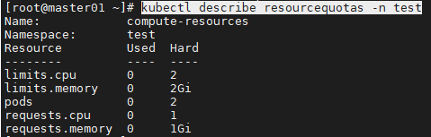
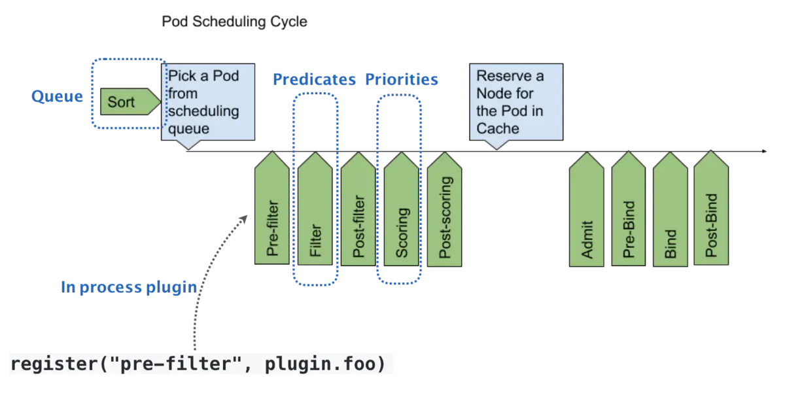
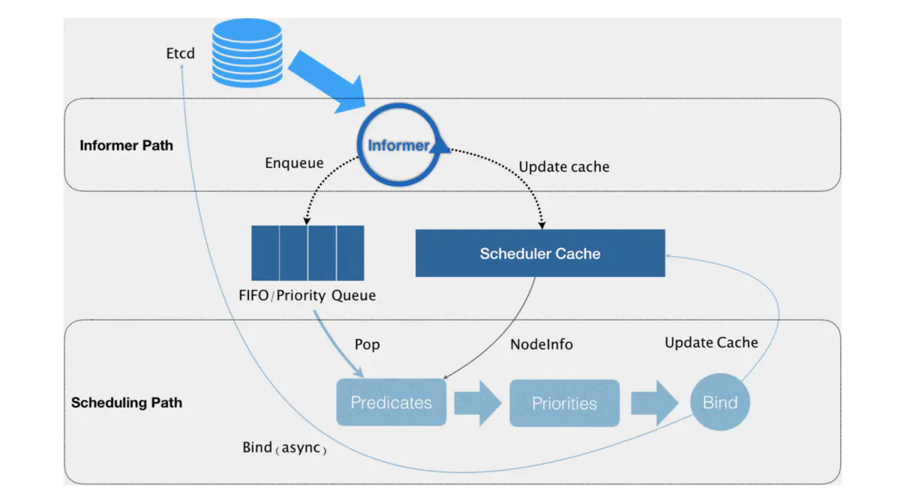

K8s调度器
污点与容忍度
默认情况下，Master节点是不允许运行用户Pod的。通过Taint/Toleration机制，可以在Master节点部署用户Pods。
原理：节点被加上一个Taint（染上“污点“），如果节点未声明自己能够容忍该”污点”（Toleration），则Pod不能在上面运行。
节点加上“污点”的命令：
- NoSchedule意味着该Taint只会在调度新的Pod时产生作用，不会影响node1上已经运行的Pods
Pod声明Toleartion：
# 能够容忍所有键值对为foo=bar的Taint
apiVersion: v1
kind: Pod
...
spec:
toleartions:
- key: "foo"
operation: "Equal"
value: "bar"
effect: "NoSchedule"
节点删除“污点”的命令：让Master节点可以运行Pod
# 删除所有节点的node-role.kubernetes.io/master的Taint（最后的减号表示删除）
$ kubectl taint nodes --all node-role.kubernetes.io/master -
资源限制
requests + limits : 大多数作业用到的资源其实远少于它所请求的资源限额
- 声明较小的requests值供调度器使用；
- 给容器Cgroups设置的limits值相对较大；
资源类型
针对每个container，都可以配置:
spec.containers[].resources.limits.cpu
spec.containers[].resources.limits.memory
spec.containers[].resources.limits.ephemeral-storage
spec.containers[].resources.requests.cpu
spec.containers[].resources.requests.memory
spec.containers[].resources.requests.ephemeral-storage
Qos模型
根据 requests 和 limits，将 Pod 划分为不同的 Qos 级别。
- 配置DaemonSet时资源副本控制器，Qos的等级务必为Guaranteed
Guaranteed：requests 和 limits 相等时（如果只设置limits，则requests等于limits）；
Burstable：不满足 Guaranteed 条件，但至少一个Container设置 requests；
BestEffort：既没有 requests，也没有 limits；
当宿主机当不可压缩资源短缺时（如内存，磁盘）时，kubelet 对 Pod 进行 Eviction（资源回收）：
- Soft Eviction：到达阈值一段时间后才会进行 Eviction；
- Hard Eviction：到达阈值后立即开始；
# 默认配置，kubelet 启动时可配
memory.available < 100Mi
nodefs.available < 10&
nodefs.inodesFree < 5%
iamgefs.available < 15%
当宿主机的 Eviction 阈值达到后，进入 MemoryPressure 或 DiskPressure 状态，避免新的 Pod 被调度到该宿主机，删除Pod的优先级：
- 首先，BestEffort 类别 Pod 优先删除；
- 其次，Burstable类别，且发生“饥饿”的资源使用量超出 requests 的 Pod；
- 最后，Guaranteed类别，且只有当 Guaranteed 类别的 Pod 的资源使用量超过 limits 限制，或者宿主机本身处于 Memory Pressure 状态时，Guaranteed 类别的 Pod 才可能被选中进行 Eviction 操作；
资源使用量超出 limits 的后果
CPU：
- Container CPU 使用量可能允许超过 limit，也可能不允许；
- Container CPU 使用量超过 limit 之后，并不会被干掉。
Memory：
- 如果 container 的内存使用量超过 request，那这个 node 内存不足时， 这个 Pod 可能会被驱逐；
- Container 的内存使用量超过 limit 时，可能会被干掉（OOMKilled）。如果可重启，kubelet 会重启它。
Node 资源紧张时，按 QoS 分配资源比例
但只要 Guaranteed pods 需要资源，这些低优先级的 pods 就必须及时释放资源。 如何释放呢？
对于 CPU 等 compressible resources，可以通过 CPU CFS shares，针对每个 QoS 分配一定比例的资源，确保在 CPU 资源受限时，每个 pod 能获得它所申请的 CPU 资源。
对于 burstable cgroup,
/burstable/cpu.shares = max(sum(Burstable pods cpu requests), MinShares) # MinShares == 2
burstableLimit := allocatable — qosMemoryRequests[PodQOSGuaranteed]*percentReserve/100
/burstable/memory.limit_in_bytes = burstableLimit
对于 bestEffort cgroup,
/besteffort/cpu.shares = MinShares # MinShares == 2
bestEffortLimit := burstableLimit — qosMemoryRequests[PodQOSBurstable]*percentReserve/100
/besteffort/memory.limit_in_bytes = bestEffortLimit
这几个 cgroup 初始化之后, kubelet 会调用 UpdateCgroups() 方法来定期更新这三个 cgroup 的 resource limit。
cpuset
将容器绑定到某个 CPU 核上，减少CPU之间的上下文切换，提升容器性能。
通过将 Pod 的 CPU 资源的 requests 和 limits 的值设置为相等即可达到 cpuset，具体绑定的核由 kubelet 决定。
节点资源切分（预留）
不是一台 node 的所有资源都能给 k8s 创建 pod 用
[Allocatable] = [NodeCapacity] - [KubeReserved] - [SystemReserved] - [HardEvictionThreshold]
- Allocatable：可以分配给 Pod 的资源信息
- NodeCapacity：节点的资源信息
资源预留（切分）相关的 kubelet 命令参数：
--system-reserved=""--kube-reserved=""--qos-reserved=""--reserved-cpus=""
是否需要对这些 reserved 资源用专门的 cgroup 来做资源限额（默认不启用），以确保彼此互不影响：
--kube-reserved-cgroup=""--system-reserved-cgroup=""
通过 kubelet 的config文件/var/lib/kubelet/config.yaml，可以查看相关参数信息
Cgroup Runtime Driver
k8s 通过配置 cgroup 来限制 container/pod 能使用的最大资源量。这个配置有两种实现方式， 在 k8s 中称为 cgroup runtime driver：
cgroupfs
这种比较简单直接，kubelet 往 cgroup 文件系统中写 limit 就行。 这也是目前 k8s 的默认方式。
systemd
所有 cgroup-writing 操作都必须通过 systemd 的接口，不能手动修改 cgroup 文件。 适用于 k8s cgroup v2 模式。
kubelet Cgroup 层级
cgroup v1 的说明。
kubelet 会在 node 上创建了 4 个 cgroup 层级，从 node 的 root cgroup （一般都是 /sys/fs/cgroup）往下：
- Node 级别：针对 SystemReserved、KubeReserved 和 k8s pods 分别创建的三个 cgroup；
- QoS 级别：在
kubepodscgroup 里面，又针对三种 pod QoS 分别创建一个 sub-cgroup： - Pod 级别：每个 pod 创建一个 cgroup，用来限制这个 pod 使用的总资源量；
- Container 级别：在 pod cgroup 内部，限制单个 container 的资源使用量。

Pod 级别 Cgroup
为了防止一个 pod 的多个容器使用资源超标，k8s 引入了 引入了 pod-level cgroup，每个 pod 都有自己的 cgroup
- 某些资源是这个 pod 的所有 container 共享的；
- 每个 pod 也有自己的一些开销，例如 sandbox container；
- Pod 级别还有一些内存等额外开销；
QoS 级别 cgroup
kubelet --cgroups-per-qos=true 参数（默认为 true）， 就会将所有 pod 分成三种 QoS，优先级从高到低：Guaranteed > Burstable > BestEffort。
每个 QoS 对应一个子 cgroup，设置该 QoS 类型的所有 pods 的总资源限额， 三个 cgroup 共同构成了 kubepods cgroup。
每个 QoS cgroup 可以认为是一个资源池，每个池子内的 pod 共享资源。
Node 级别 cgroup
所有的 k8s pod 都会落入 kubepods cgroup；
- 所有 k8s pods 占用的资源都已经通过 cgroup 来控制，剩下的是 k8s 组件自身和操作系统基础服务所占用的资源，即
KubeReserved和SystemReserved - k8s 无法管理这两种服务的资源分配，但能管理它们的限额：有足够权限给它们创建并设置 cgroup （kubelet 的参数）
--kube-reserved-cgroup=""和--system-reserved-cgroup=""，默认为空，表示不创建，也就是系统组件和 pod 之间并没有严格隔离。
cgroup (v1) 配置目录
cgroup root：sys/fs/cgroup
/kubepods（node 级别配置）：按 resource controller 类型
/sys/fs/cgroup/cpu/kubepods//sys/fs/cgroup/memory/kubepods/
Qos 级别配置
- Burstable或BestEffort：
/sys/fs/cgroup/{controller}/kubepods/{burstable|besteffort} - Guaranteed ：直接就是
/sys/fs/cgroup/{controller}/kubepods/， 没有单独的子目录 - 这种类型的 pod 都设置了 limits， 就无需再引入一层 wrapper 来防止这种类型的 pods 的资源使用总量超出限额
Pod级别配置：配置在Qos cgroup 配置的下一级
- 如
/sys/fs/cgroup/{controller}/kubepods/burstable/{pod_id}/
Container级别配置：Pod 的下一级
- 如
/sys/fs/cgroup/{controller}/kubepods/{pod_id}/{container_id}/
pod的 requets/limits 的计算
pod 的 requests/limits 需要由 kubelet 综合统计 pod 的所有 container 的 request/limits 计算得到。 CPU 和内存的计算方式如下：
# 计算 pod 的 CPU request，通过 cpu.shares 能实现最小值控制
pod<pod_id>/cpu.shares = sum(pod.spec.containers.resources.requests[cpu])
# 计算 pod 的 CPU limit，通过 cpu.cfs_quota_us 能实现最大值控制
pod<pod_id>/cpu.cfs_quota_us = sum(pod.spec.containers.resources.limits[cpu])
# 计算 pod 的 Memory limit
pod<pod_id>/memory.limit_in_bytes = sum(pod.spec.containers.resources.limits[memory])
注意，
-
如果其中某个 container 的 cpu 字段只设置了 request 没设置 limit， 则 pod 将只设置
cpu.shares，不设置cpu.cfs_quota_us。 -
如果所有 container 都没有设置 cpu request/limit（等效于
requests==limits==0）， 则将 pod cpu.share 将设置为 k8s 定义的最小值 2。
这种 pod 在 node 空闲时最多能使用整个 node 的资源；但 node 资源紧张时，也最先被驱逐。
资源配额
资源配额是一个用于限制一个命名空间下资源使用的机制，其包括如下两个对象：
ResourceQuota：限制单个命名空间下的资源使用量。包括CPU，内存，存储，资源对象的个数等等。
LimitRanger：为容器的Limits和Requests设置默认值和范围约束。
ResourceQuota
resourcequota对相当多的资源提供限制，详细内容可参考文档：https://kubernetes.io/docs/concepts/policy/resource-quotas/#compute-resource-quota。
- 示例：为test命名空间设置资源配额
resource.yaml的信息如下：
apiVersion: v1
kind: ResourceQuota
metadata:
name: compute-resources
namespace: test
spec:
hard:
pods: "2"
requests.cpu: "1"
requests.memory: 1Gi
limits.cpu: "2"
limits.memory: 2Gi
- 如上，对pod数量和使用的requests与limits值做了限制。可以使用describe命令查看目前的资源使用量和限制：

- 尝试创建两个Pod，再次创建后报错：记得再次创建时修改pod名称
apiVersion: v1
kind: Pod
metadata:
name: high-priority
namespace: test
spec:
containers:
- name: high-priority
image: ubuntu
command: ["/bin/sh"]
args: ["-c", "while true; do echo hello; sleep 10;done"]
resources:
requests:
memory: "1Gi"
cpu: "500m"
limits:
memory: "1Gi"
cpu: "500m"

LimitRanger
LimitRanger用于为容器设置默认的requests和limits值，以及限制其范围。
- 示例：限制test命名空间下容器的requests值和limits值
- kubectl config use-context kubernetes-admin@kubernetes
- kubectl apply -f limit.yaml
apiVersion: v1
kind: LimitRange
metadata:
name: memory-range
namespace: test
spec:
limits:
- max: # 限制容器最大limits值
memory: 20Mi
min: # 限制容器最小limits值
memory: 10Mi
default: # 默认limits值
memory: 10Mi
defaultRequest: # 默认requests值
memory: 10Mi
type: Container
- 如上，如创建Pod时未指定limits和requests值，则自动为其添加requests.memory: 10Mi，limits.memory: 10Mi；
- 如创建时limits.memory值小于10Mi或大于20Mi，则会拒绝该请求。
Pod 开销
Pod 本身占用大量系统资源。这些是运行 Pod 内容器所需资源之外的资源。
Pod 的开销是根据与 Pod 的 RuntimeClass 相关联的开销在准入时设置的
默认调度器
职责：为新创建出来的Pod寻找一个合适的节点。

Kubernetes 调度器的核心，实际上就是两个相互独立的控制循环。
Informer Path：启动一系列 informer，来监听 Etcd 中 Pod、Node、Service 等与调度相关的对象的变化，加入调度队列；- 负责对调度器缓存( scheduler cache）进行更新，通过缓存提升算法执行效率；
Scheduling Path：不断地从调度队列里出队一个 Pod- Predicate：从集群所有的节点中根据调度算法选出所有可以运行该Pod的节点；
- Priority ：从第一步结果中，再根据调度算法挑选一个最符合条件的节点作为最终结果；
- Bind：将pod的
spec.nodeNmae字段填上调度结果的节点名称。
乐观绑定（Assume）：不在这个关键调度步骤中远程访问 API server，在 Bind 阶段，调度器只会更新 Scheduler Cache 里的 Pod 和 Node 信息
-
再创建一个 Goroutine 来异步向 API server 发起更新 Pod 的请求，来完成真正的 Bind 操作。
-
对应节点的 kubelet 会进行一个 Admit 的操作，再次确认该 pod 能否运行在该节点上。
优先级和抢占
解决 Pod 调度失败时该怎么办的问题。
优先级越高的Pod在调度时会优先出队。
默认情况下，Pod调度失败后，会被暂时“搁置”，直到 Pod 被更新或者集群状态发生变化，调度器才会对 Pod 进行重新调度。
当高优先级的Pod调度失败后，触发“抢占”，调度器在集群中寻找一个节点：
- 该节点上的一个或多个低优先级的Pod被删除后，高优先级的Pod可以被调度到该节点；
- 仅设置
spec.nominatedNodeName字段，下一个周期进行调度；
# 定义 PriorityClass
apiVersion: scheduling.k8s.io/v1
kind: PriorityClass
metadata:
name: high-priority
value: 1000000
globalDefault: false # 是否作为系统的默认优先级
description: "This priority class should be used for high priority service pods only."
-----
# Pod使用PriorityClass
apiVersion: v1
kind: Pod
metadata:
name: nginx
labels:
env: test
spec:
containers:
- name: nginx
image: nginx
imagePullPolicy: IfNotPresent
priorityClassName: high-priority
默认的调度配置
- 污点和容忍；
- 节点选择器和亲和性；
- Pod 间亲和性与反亲和性；
- Pod拓朴分布；
- Pod 请求的所有资源检查；
NodeResourcesBalancedAllocation：调度 Pod 时，选择资源使用更为均衡的节点
官方调度插件
支持：
- Capacity Scheduling：容量调度器；
- Coscheduling：Gang Scheduling，批量协同调度
-
通过Pod的调度状态 Wait 保证至少N个Pod可以被一起调度；
- Node Resource Topology
- Preemption Toleration
- Trimaran
自定义调度器见 自定义调度